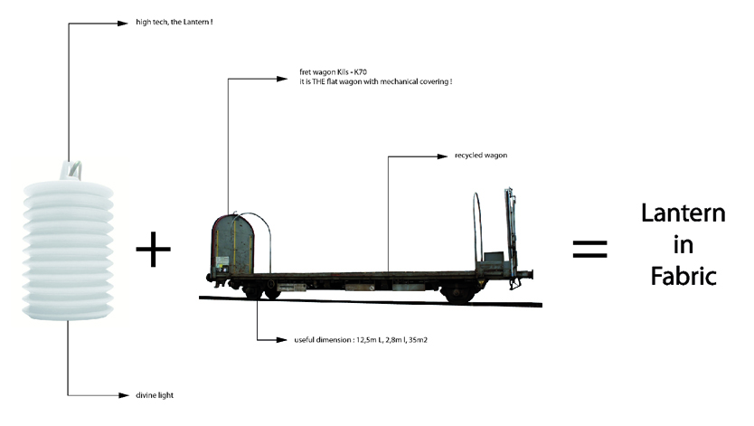
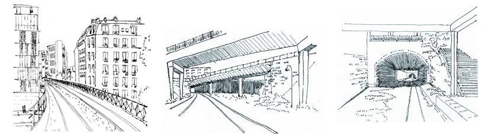
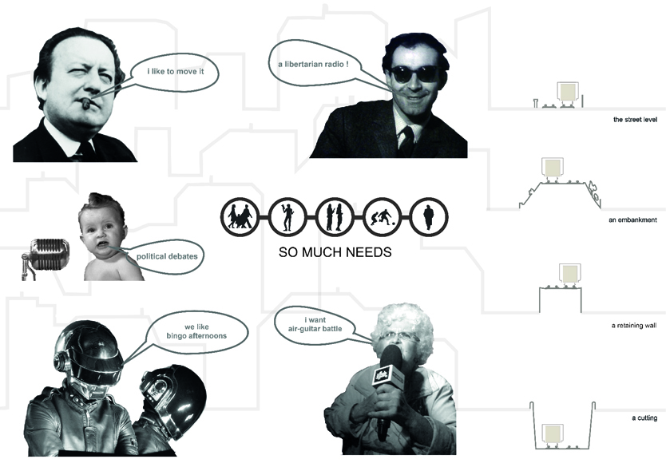
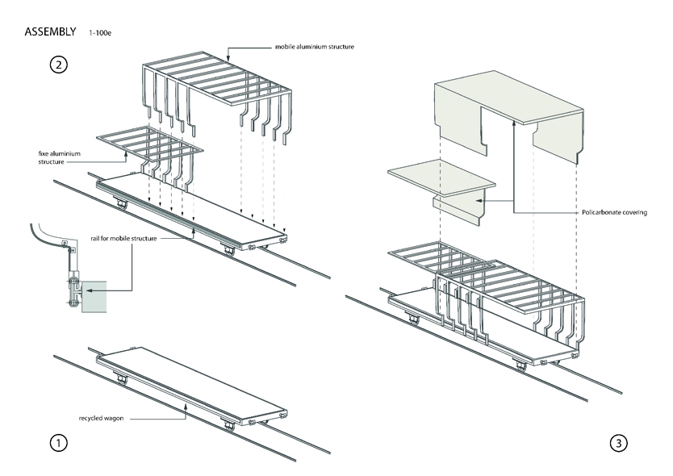
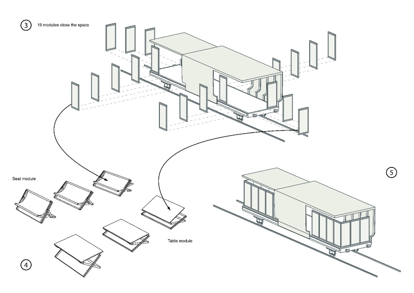
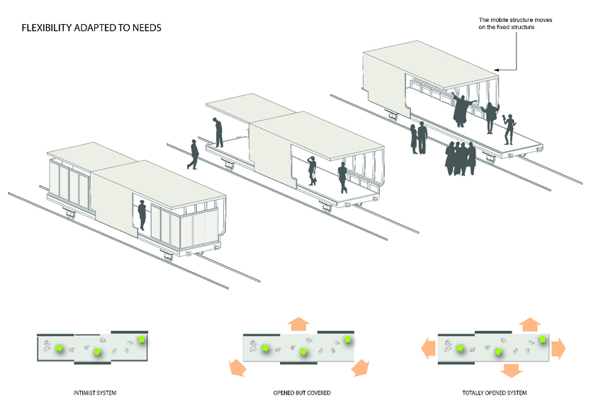
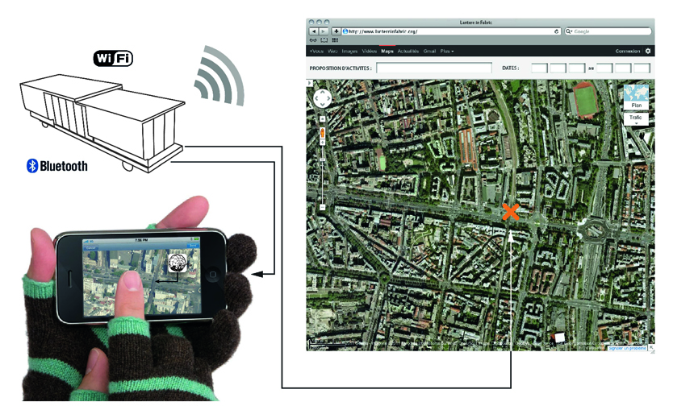
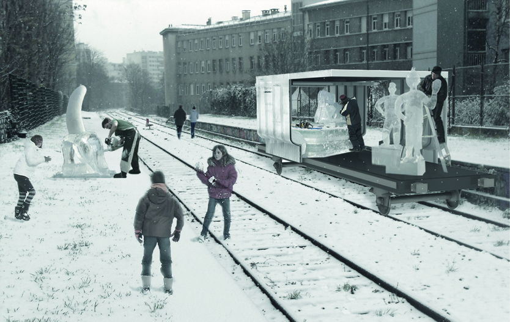
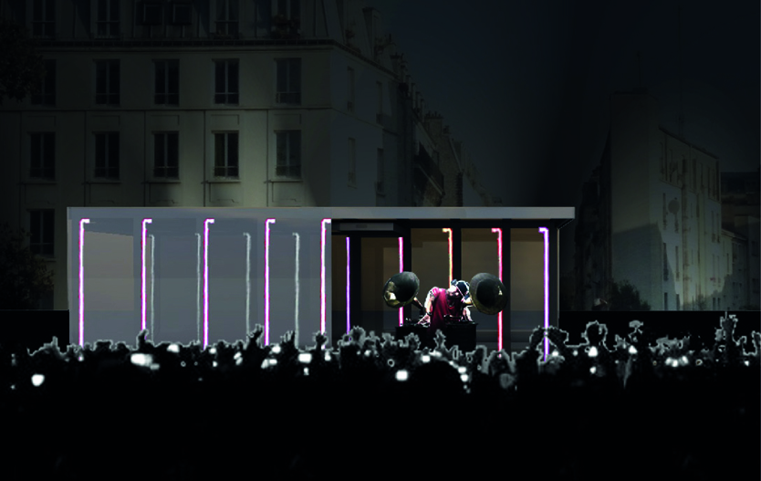
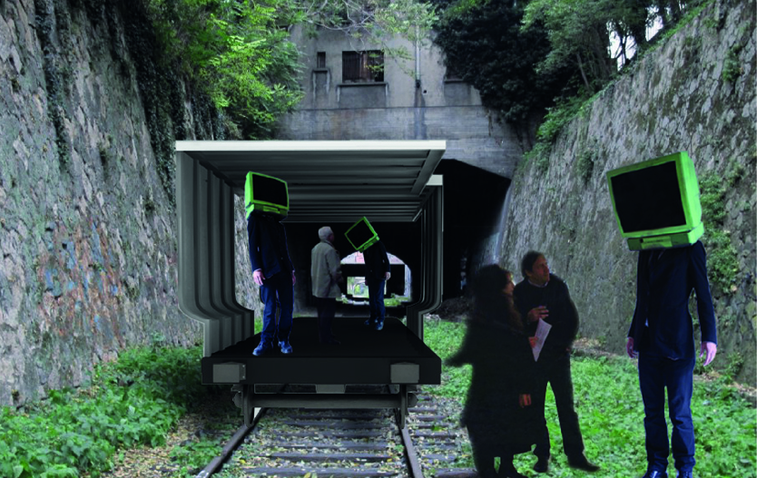

Le projet engage un positionnement et l’exercice du concours permet d’émettre des hypothèses sur des territoires en devenir. Tel est le cas avec le projet Lantern In Fabric qui détourne la question de la « halle marchande » pour resituer la problématique sur un territoire de la ville de Paris qui fût longtemps en questionnement. La pensée de l’espace public a trop souvent été pyramidale, entre l’urbaniste/ingénieur dessinant à plat sur sa table à dessin de grands espaces qui devraient d'eux-mêmes « créer de la vie dans la ville ». Qu’en est-il de cette pensée aujourd’hui, dans une ville en mouvement perpétuel ?
Mouvements physiques et virtuels, la ville d’aujourd’hui n’est plus l’interface unique qui organise, par sa simple structure physique, la vie de quartier. Le numérique et les besoins constamment changeants des habitants induisent des décisions qui se font en préambule, bien avant de mettre le pied dans un lieu.
Et si la ville pouvait s’adapter constamment à ces changements incessants ?
Le concours tente d'apporter une vision d'une architecture raisonnée pour qu'elle puisse être totalement appropriable par l'habitant, tant dans ses espaces que dans son système constructif. En ceci, nous partons du principe que la construction de l'environnement habité n'est en rien un oeuvre en soi. C'est un paysage changeant constamment.

La petite ceinture de Paris est un territoire sans équivalent dans une ville dense. Paysage en attente de décisions politiques, il est une transformation continuelle qui accuse le rythme des saisons en préservant sa part de mystère. Par ses 34km de voies, la petite ceinture est un lieu idéal pour l’expérimentation de la ville en mouvement.

Lantern in fabric est une structure mobile qui prend forme sur les squelettes de wagons fret K70. Cette mobilité permet de réinterpréter des paysages. Un pont devient belvédère ou scénographie, un tunnel devient, le temps d’une soirée, un cinéma en plein air.



L’assemblage de la structure répond elle-même également à ces prérogatives de mobilités en étant elle-même un outil montable/démontable qui peut organiser l’espace autour de lui.

Les parois sont des modules de chaises et de tables qui cloisonnent ou ouvrent l’espace extérieur.

Cette modularité permet un champ d’activité multiple, qui s’adapte à chacun des besoins introduits par les habitants. La halle mobile est donc connectée au réseau, permettant à tout un chacun de choisir son emplacement à l’heure et la date voulue. L’activité peut être relayée sur les réseaux sociaux qui situent la structure dans la ville et invite les habitants à suivre l’activité.



